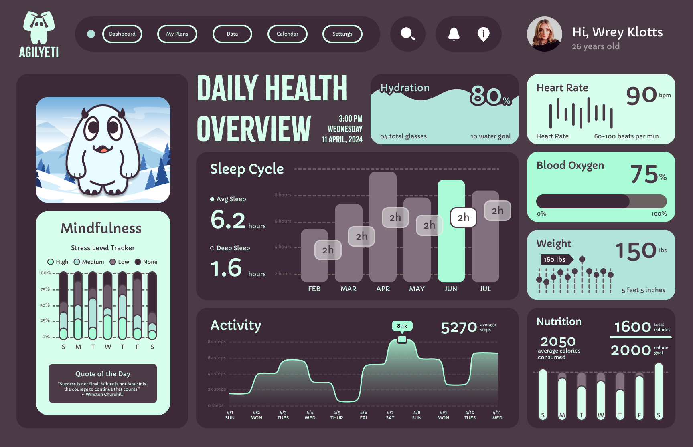
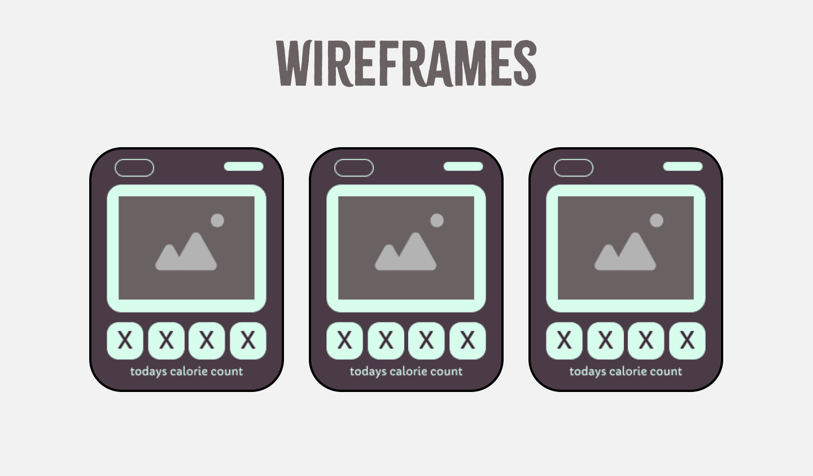
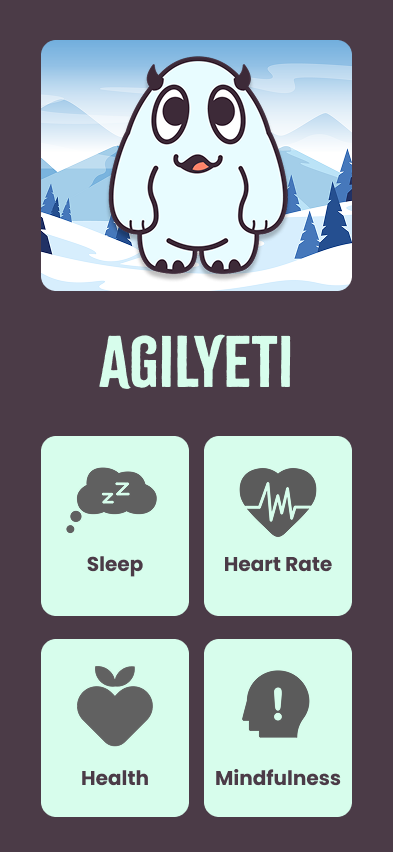
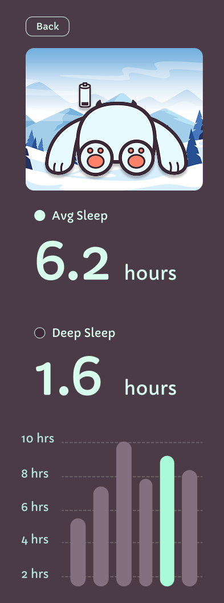
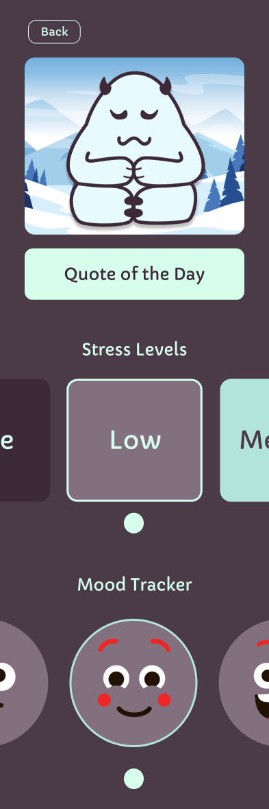
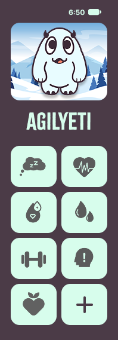
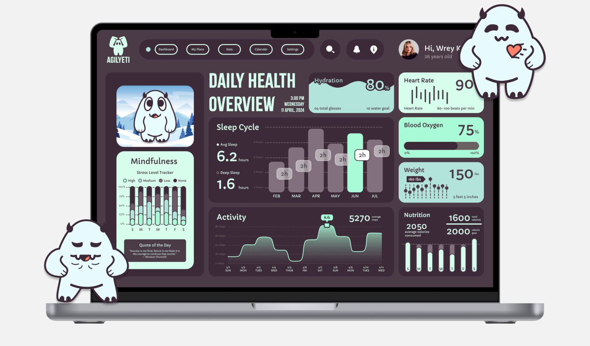
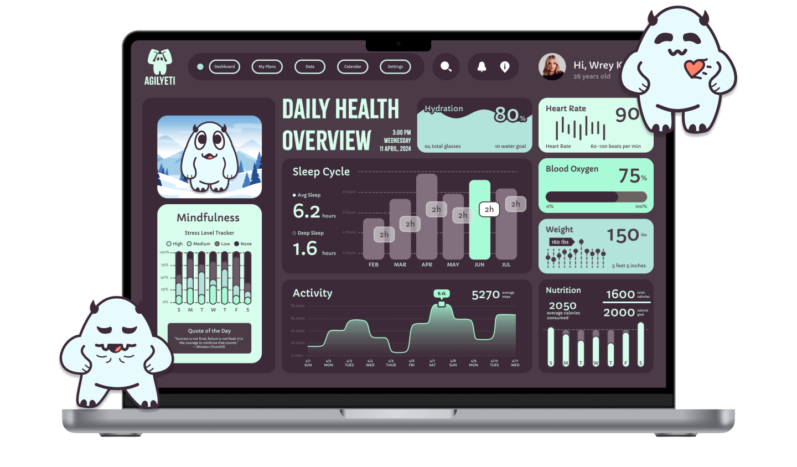

Product Design · UI/UX · Wearable App
Agilyeti Wellness.
Agilyeti is a wearable wellness experience designed around everyday health habits, bringing exercise, sleep, mindfulness, nutrition, hydration, heart rate, and vitals into one friendly Apple Watch–focused interface.

Overview
Wellness made approachable.
Agilyeti combines multiple wellness tools into a single wearable experience with a playful visual identity.
The concept explores how users can check in with their health quickly throughout the day without needing to open a larger mobile dashboard for every task.

Design process
From structure to interaction.
The interface was developed from early wireframes into a consistent set of wearable screens and wellness flows.
The design system balances compact information density with large touch targets, clear labels, expressive character art, and distinct task-focused screens.


Core experience
One companion, many wellness tools.
Each area uses the same visual language while adapting to a specific wellness task, keeping the experience recognizable across exercise, sleep, nutrition, hydration, mindfulness, heart rate, and vitals.




Health tracking
Quick information, at a glance.
Wearable interactions need to be immediate and easy to scan.
Agilyeti uses focused screens for hydration, nutrition, heart rate, vitals, movement, and sleep so users can reach relevant information with minimal navigation.




Outcome
A cohesive wearable system.
Agilyeti developed into a broad wearable interface rather than a single-screen concept.
The project demonstrates a complete visual system across multiple wellness categories while maintaining a friendly, recognizable personality and consistent interaction patterns.